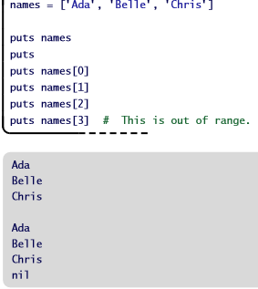
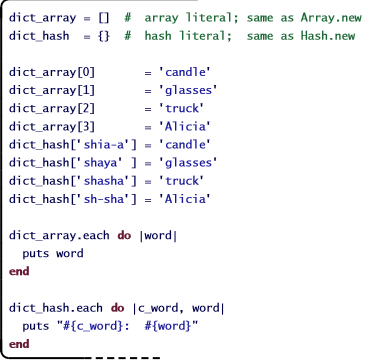

Arrays and Hashes
Who Knows What Data Our Future Will Bring?!
date
Remember the first day of elementary school? I don't. It was so traumatic that I've blocked it from my memory. Whose little psyche can handle the idea of going into a totally new place, with your new coloring books and brother's hand-me-down Power Ranger shoes, and not feeling comfortable? It's so scary to go somewhere new, especially when, as you get on the bus, Mom says "Make sure you don't lose your backpack!" Thanks Mom, as if this day wasn't going to be stressful enough without your demands.
Luckily, school had the very wise policy of assigning each student a number as they got off the bus. I can imagine administration thought, "what could be more dehumanizing than taking impressionable five and six year olds and denying them an identity?"" It must have worked, since each student was quickly herded to a line that would eventually march them to a classroom.
As I was number 73, I was brought to classroom number 3. The teacher, Mr ------ [redacted], stood outside the door, asking for each student's number, to which he would reply with "now you are," and a letter. I was eventually given letter U, because 73-26-26 = 21, and U is the 21st letter of the alphabet. When we finally got into the classroom, Mr. redacted had a large poster at the front of the classroom, with velcro stick-on numbers paired with stick-on letters. Do you remember those? No? Well, they were velcro stick-on letters and numbers, I don't think it requires much more explanation. Mr redacted said "Hi class, I'm Mr. Redacted. I'll be your teacher this year in Kindergarten, I'm very excited to meet all of you. First off, I'd like everyone to find your letter on this board, and tell me the number next to it."" I saw that U was paired with the number 21. "Now," Mr. redacted told us, "I want you to go to the back and put your things in the cubby marked with that letter."
Exceedingly long metaphor short, I, letter U, found the cubby 21 and robotically put my things in there. For our class's first day, Mr. redacted was using a form of collecting called an Array. In an array, we would like to arrange a list of items, so we create a slot, or "index," for each thing, counting upwards, and put the content in that spot. Thus, the letter U's contents were put in index 21 (I put my books in cubby 21). Obviously, Mr. redacted should have worked out some kind of refactoring system with administration, as we spent the better part of our first morning of Kindergarten figuring out where to put our stuff. But it was an array, nonetheless.
Looking at the above snippet of code, the first line shows us that we can place information into an array just by creating a new array that has them in it. The order that we place our information in the array is the order by which it will be indexed (computer indexes, unlike those of most humans, begin counting with the number 0, not 1). After that, we can ask for the information in a specific index by stating that we want that the information from that numbered index. Just make sure you remember the index!
It just so happens that, during naptime that day, I woke my friend, letter Q, and we went up to play with the velcro letters and numbers on the board. How could we resist? They made such a satisfying tearing noise when you took them off their spot that it didn't even matter that you forgot where they went and put letter I next to number 24, or number 9 next to letter A. That wasn't a pressing matter to us that afternoon.
What Q and I failed to realize was that, while we might not have cared what happened to the velcro poster, Mr. redacted certainly did. When we came in the next morning, he was sitting with his head in his hands, unable to tell his students where to go. So confident was he in his board of movable labels that he threw out the only piece of paper that explained its meaning. And so it was that the second day of elementary school, my class spent the entire morning giving the teacher our first and last names, and re-receiving our cubby assignments.
Looking at the code for a hash above, we see that, while the dict_array organized its content by number, we can assign keys (in this case, names) to the information we wish to store in dict_hash. Searching for this information will be MUCH easier, as I can ask myself (or the computer), "what does shaya mean in this little child's vocabulary?" This is a much more meaningful question than "what is in index 1?"
Due to Mr. redacted's foolhardiness (or my mischievousness, although probably not), the array system failed. Without our assigned indexes to guide us, we could not keep track of which numb--, I mean student, student was which. Mr. redacted finally made Kindergarten a welcoming place by using our names in a system of collecting called Hashing. As opposed to an array, which orders things by a numbered index, Hashes label their contents using keys, which are designations given to a slot. Now, instead of having cubby 21, I had David Rifkin's cubby. Everything in there was mine, and I was the key to everything in it. It was almost like being a real boy! Hashes can be more helpful than arrays in exactly this way; by using a key value rather than an index, we can broach the hash knowing the entity whose values or information we want to find. I would say that's much easier than searching through slots from 1-26.
And so it came to be that in the first week of Kindergarten, I had taught Mr. redacted more about programming than he'd ever teach me. You're welcome, Mr. redacted. Sincerely, Letter U.
twitter facebook email>